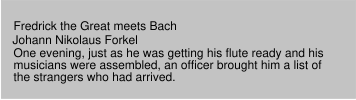
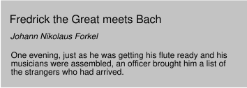

Contents
This section is non-normative.
In this tutorial, we show how easy it can be to design simple style sheets. For this tutorial, you will need to know a little HTML (see [HTML4]) and some basic desktop publishing terminology.
We begin with a small HTML document:
<!DOCTYPE HTML PUBLIC "-//W3C//DTD HTML 4.01//EN">
<HTML>
<HEAD>
<TITLE>Bach's home page</TITLE>
</HEAD>
<BODY>
<H1>Bach's home page</H1>
<P>Johann Sebastian Bach was a prolific composer.
</BODY>
</HTML>
To set the text color of the H1 elements to red, you can write the following CSS rules:
h1 { color: red }
A CSS rule consists of two main parts: selector ('h1') and declaration ('color: red'). In HTML, element names are case-insensitive so 'h1' works just as well as 'H1'. The declaration has two parts: property name ('color') and property value ('red'). While the example above tries to influence only one of the properties needed for rendering an HTML document, it qualifies as a style sheet on its own. Combined with other style sheets (one fundamental feature of CSS is that style sheets are combined), the rule will determine the final presentation of the document.
The HTML 4 specification defines how style sheet rules may be specified for HTML documents: either within the HTML document, or via an external style sheet. To put the style sheet into the document, use the STYLE element:
<!DOCTYPE HTML PUBLIC "-//W3C//DTD HTML 4.01//EN">
<HTML>
<HEAD>
<TITLE>Bach's home page</TITLE>
<STYLE type="text/css">
h1 { color: red }
</STYLE>
</HEAD>
<BODY>
<H1>Bach's home page</H1>
<P>Johann Sebastian Bach was a prolific composer.
</BODY>
</HTML>
For maximum flexibility, we recommend that authors specify external style sheets; they may be changed without modifying the source HTML document, and they may be shared among several documents. To link to an external style sheet, you can use the LINK element:
<!DOCTYPE HTML PUBLIC "-//W3C//DTD HTML 4.01//EN">
<HTML>
<HEAD>
<TITLE>Bach's home page</TITLE>
<LINK rel="stylesheet" href="bach.css" type="text/css">
</HEAD>
<BODY>
<H1>Bach's home page</H1>
<P>Johann Sebastian Bach was a prolific composer.
</BODY>
</HTML>
The LINK element specifies:
To show the close relationship between a style sheet and the structured markup, we continue to use the STYLE element in this tutorial. Let's add more colors:
<!DOCTYPE HTML PUBLIC "-//W3C//DTD HTML 4.01//EN">
<HTML>
<HEAD>
<TITLE>Bach's home page</TITLE>
<STYLE type="text/css">
body { color: black; background: white }
h1 { color: red; background: white }
</STYLE>
</HEAD>
<BODY>
<H1>Bach's home page</H1>
<P>Johann Sebastian Bach was a prolific composer.
</BODY>
</HTML>
The style sheet now contains four rules: the first two set the color and background of the BODY element (it's a good idea to set the text color and background color together), while the last two set the color and the background of the H1 element. Since no color has been specified for the P element, it will inherit the color from its parent element, namely BODY. The H1 element is also a child element of BODY but the second rule overrides the inherited value. In CSS there are often such conflicts between different values, and this specification describes how to resolve them.
CSS 2 has more than 90 properties, including 'color'. Let's look at some of the others:
<!DOCTYPE HTML PUBLIC "-//W3C//DTD HTML 4.01//EN">
<HTML>
<HEAD>
<TITLE>Bach's home page</TITLE>
<STYLE type="text/css">
body {
font-family: "Gill Sans", sans-serif;
font-size: 12pt;
margin: 3em;
}
</STYLE>
</HEAD>
<BODY>
<H1>Bach's home page</H1>
<P>Johann Sebastian Bach was a prolific composer.
</BODY>
</HTML>
The first thing to notice is that several declarations are grouped within a block enclosed by curly braces ({...}), and separated by semicolons, though the last declaration may also be followed by a semicolon.
The first declaration on the BODY element sets the font family to "Gill Sans". If that font is not available, the user agent (often referred to as a "browser") will use the 'sans-serif' font family which is one of five generic font families which all users agents know. Child elements of BODY will inherit the value of the 'font-family' property.
The second declaration sets the font size of the BODY element to 12 points. The "point" unit is commonly used in print-based typography to indicate font sizes and other length values. It's an example of an absolute unit which does not scale relative to the environment.
The third declaration uses a relative unit which scales with regard to its surroundings. The "em" unit refers to the font size of the element. In this case the result is that the margins around the BODY element are three times wider than the font size.
This section is non-normative.
CSS can be used with any structured document format, for example with applications of the eXtensible Markup Language [XML11]. In fact, XML depends more on style sheets than HTML, since authors can make up their own elements that user agents do not know how to display.
Here is a simple XML fragment:
<ARTICLE>
<HEADLINE>Fredrick the Great meets Bach</HEADLINE>
<AUTHOR>Johann Nikolaus Forkel</AUTHOR>
<PARA>
One evening, just as he was getting his
<INSTRUMENT>flute</INSTRUMENT> ready and his
musicians were assembled, an officer brought him a list of
the strangers who had arrived.
</PARA>
</ARTICLE>
To display this fragment in a document-like fashion, we must first declare which elements are inline-level (i.e., do not cause line breaks) and which are block-level (i.e., cause line breaks).
INSTRUMENT { display: inline }
ARTICLE, HEADLINE, AUTHOR, PARA { display: block }
The first rule declares INSTRUMENT to be inline and the second rule, with its comma-separated list of selectors, declares all the other elements to be block-level. Element names in XML are case-sensitive, so a selector written in lowercase (e.g., 'instrument') is different from uppercase (e.g., 'INSTRUMENT').
One way of linking a style sheet to an XML document is to use a processing instruction:
<?xml-stylesheet type="text/css" href="bach.css"?>
<ARTICLE>
<HEADLINE>Fredrick the Great meets Bach</HEADLINE>
<AUTHOR>Johann Nikolaus Forkel</AUTHOR>
<PARA>
One evening, just as he was getting his
<INSTRUMENT>flute</INSTRUMENT> ready and his
musicians were assembled, an officer brought him a list of
the strangers who had arrived.
</PARA>
</ARTICLE>
A visual user agent could format the above example as:
 [D]
Notice that the word "flute" remains within the paragraph since it is the content of the inline element INSTRUMENT.
Still, the text is not formatted the way you would expect. For example, the headline font size should be larger than then the rest of the text, and you may want to display the author's name in italic:
INSTRUMENT { display: inline }
ARTICLE, HEADLINE, AUTHOR, PARA { display: block }
HEADLINE { font-size: 1.3em }
AUTHOR { font-style: italic }
ARTICLE, HEADLINE, AUTHOR, PARA { margin: 0.5em }
A visual user agent could format the above example as:
 [D]
Adding more rules to the style sheet will allow you to further describe the presentation of the document.
This section up to but not including its subsections is non-normative.
This section presents one possible model of how user agents that support CSS work. This is only a conceptual model; real implementations may vary.
In this model, a user agent processes a source by going through the following steps:
Part of the calculation of values depends on the formatting algorithm appropriate for the target media type. For example, if the target medium is the screen, user agents apply the visual formatting model.
Note that the CSS user agent does not alter the document tree during this phase. In particular, content generated due to style sheets is not fed back to the document language processor (e.g., for reparsing).
For all media, the term canvas describes "the space where the formatting structure is rendered." The canvas is infinite for each dimension of the space, but rendering generally occurs within a finite region of the canvas, established by the user agent according to the target medium. For instance, user agents rendering to a screen generally impose a minimum width and choose an initial width based on the dimensions of the viewport. User agents rendering to a page generally impose width and height constraints. Aural user agents may impose limits in audio space, but not in time.
CSS 2 selectors and properties allow style sheets to refer to the following parts of a document or user agent:
This section is non-normative.
CSS 2, as CSS1 before it, is based on a set of design principles:
Forward and backward compatibility. CSS 2 user agents will be able to understand CSS1 style sheets. CSS1 user agents will be able to read CSS 2 style sheets and discard parts they do not understand. Also, user agents with no CSS support will be able to display style-enhanced documents. Of course, the stylistic enhancements made possible by CSS will not be rendered, but all content will be presented.
Complementary to structured documents. Style sheets complement structured documents (e.g., HTML and XML applications), providing stylistic information for the marked-up text. It should be easy to change the style sheet with little or no impact on the markup.
Vendor, platform, and device independence. Style sheets enable documents to remain vendor, platform, and device independent. Style sheets themselves are also vendor and platform independent, but CSS 2 allows you to target a style sheet for a group of devices (e.g., printers).
Maintainability. By pointing to style sheets from documents, webmasters can simplify site maintenance and retain consistent look and feel throughout the site. For example, if the organization's background color changes, only one file needs to be changed.
Simplicity. CSS is a simple style language which is human readable and writable. The CSS properties are kept independent of each other to the largest extent possible and there is generally only one way to achieve a certain effect.
Network performance. CSS provides for compact encodings of how to present content. Compared to images or audio files, which are often used by authors to achieve certain rendering effects, style sheets most often decrease the content size. Also, fewer network connections have to be opened which further increases network performance.
Flexibility. CSS can be applied to content in several ways. The key feature is the ability to cascade style information specified in the default (user agent) style sheet, user style sheets, linked style sheets, the document head, and in attributes for the elements forming the document body.
Richness. Providing authors with a rich set of rendering effects increases the richness of the Web as a medium of expression. Designers have been longing for functionality commonly found in desktop publishing and slide-show applications. Some of the requested rendering effects conflict with device independence, but CSS 2 goes a long way toward granting designers their requests.
Alternative language bindings. The set of CSS properties described in this specification form a consistent formatting model for visual and aural presentations. This formatting model can be accessed through the CSS language, but bindings to other languages are also possible. For example, a JavaScript program may dynamically change the value of a certain element's 'color' property.
Accessibility. Several CSS features will make the Web more accessible to users with disabilities:
Note. For more information about designing accessible documents using CSS and HTML, see [WCAG20].